Archive
Everything else, by year it began. These are my public repositories, from this year back to scripts I published in 2000. The ones I wrote up as case studies are marked Featured. Years run from the first commit to the last one.
Showing tag
2026
-
anilewie-scriptlet
An old 1999 scriptlet converted to modern JavaScript: animated eyes and mouth on a photo.
-
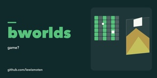
bworlds
Procedural world explorer with seamless 2D and 3D views, written as a JavaScript monorepo
-

crystal-9
A tiny local mixture-of-experts model that plays Tic-Tac-Toe
-

crystal-palace
Tic-Tac-Toe on the Commodore 64 using the crystal-9 model (ANN)
-

dreamy-tags
WordPress plugin that shows a tag cloud filtered by categories and tags, as a shortcode or block.
-

falken-9
Small model with MoE targeting the Commodore 64 to play Tic-Tac-Toe
-
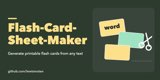
Flash-Card-Sheet-Maker
Generate printable flash cards from any text
-

gamemaker-os
A game-library operating system for the Raspberry Pi Zero W: plays DOS Game-Maker games straight from the SD card on HDMI, with demo previews, high scores and saves. Runs on sandbox-kernel.
-

gamemaker-pocket
DOS Game-Maker games in your pocket: firmware for cheap ESP32 touch-screen boards (CYD 2.8" and 3.5"), with games built in or on microSD and a one-click browser flasher.
-

GameMaker-SandboxEdition
Sandbox Edition of Recreational Software Design's GameMaker product, released in 1994
-

ghostjack
The port AI agents jack into when they need eyes, ears and a mouth in meatspace: a local bridge and cyberpunk control deck for a $2 network camera. See, listen, aim, night vision and speak. No cloud.
-
lewismoten.com
Custom CSS for lewismoten.com
-

local-agent-lab
A local-first browser workspace for small AI models, coding projects, research, and scheduled agents.
-

palace-9
Predictive Autonomous Learning And N̵u̵c̵l̵e̵a̵r Command Evaluation Model
-

Phone-Exhibit
Allow audio to be uploaded and managed for a PBX
-

pocket-fleet
A bridge simulator for one player or a room: crew stations from browsers, Cheap Yellow Displays and M5 Cardputers over local Wi-Fi
-

qr
QR Code creator and inspector
-

sandbox-kernel
A small bare-metal kernel for your own OS. Raspberry Pi Zero W first: your OS is one program on the SD card, with files, framebuffer, input, saves, e-ink status and a recovery console. A/B updates, POSIX-style ABI, MIT.
-

sector-256
Commodore 64 games and utilities that fit in a 256-byte sector.
-
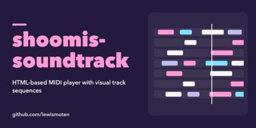
shoomis-soundtrack
HTML-based MIDI player with visual track sequences
-

storage-d64
Read, Repair, Optimize, Visualize, and Transfer files on D64 disk images used by the Commodore 64 1541 Drive
-
story-forge
Create stories using AI
-

streamscribe
A local toolkit for recording public meetings and making them searchable: livestream capture, archive backfill, Whisper transcripts, speaker and vote tracking.
-
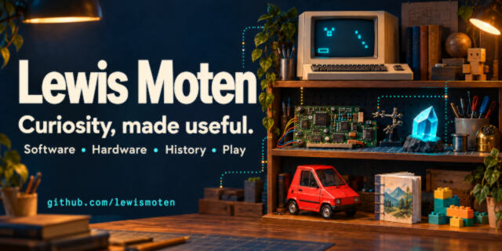
the-chez
A game about a CitiCar using RSD Game Maker SE engine.
-
Time-Sheet
Quick and dirty local time sheet
-

Tiny-Pockets-Press
Build microfiction, chapbooks, miniature bindings, and tiny print experiments.
-
Zogograph
Planning, rebrand and migration records for the Zogograph server monitoring projects.
-

zogograph-client
Primary client application to monitor a server: a PHP collector and static dashboard
2025
-
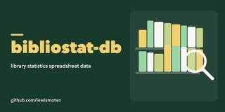
bibliostat-db
Node.js script that reads the Virginia Public Library Survey spreadsheet.
-
Find-SPL-Books
Grab a collection of all books in the library
-
identity-service
Centralized identity and authentication service supporting SSO, JWT sessions, MFA (TOTP), account recovery, audit logging, and security controls.
-
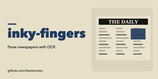
inky-fingers
Planned tool to parse newspapers with OCR.
-
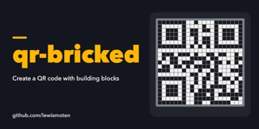
qr-bricked
Create a QR code with building blocks
-
royal-downloader
Archive news from the Royal Examiner (placeholder, no code yet)
-
wcfac-general-ledger
Warren County Finance Audit Committee - General Ledger Viewer
-
wcfac-parser
Convert fuel card transaction reports copied from PDFs into CSV
-
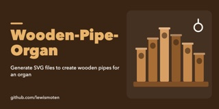
Wooden-Pipe-Organ
Calculate dimensions for wooden organ pipes, for laser cutting
2024
-
7th-son
7th Son podcast audio player in Second Life
-

Athens-Acropolis-4507
My old GeoCities web page, restored
-
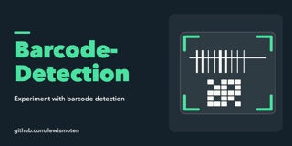
Barcode-Detection
Experiment with barcode detection
-
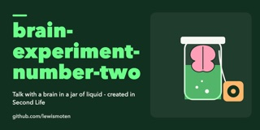
brain-experiment-number-two
Talk with a brain in a jar of liquid - created in Second Life
-

data-over-audio
Transfer data via Web Audio API
-
download-financial-reports
Download financial reports from the Handley library (placeholder, no code yet)
-
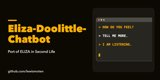
Eliza-Doolittle-Chatbot
Port of ELIZA to Linden Scripting Language in Second Life
-

sculpted-prim-toolkit
In-browser viewer and editor for Second Life-style sculpted prim maps, with glTF, OBJ and STL export.
-
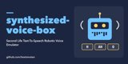
synthesized-voice-box
Second Life text-to-speech robotic voice emulator
-
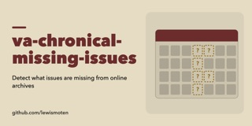
va-chronical-missing-issues
Detect which issues are missing from an online newspaper archive.
2023
-
Accounts
PHP and MySQL account service with email verification, password rules and two-factor authentication.
2022
-
emporia-daily
Planned script to fetch Emporia energy sensor data daily.
2021
-
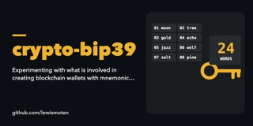
crypto-bip39
Experimenting with what is involved in creating blockchain wallets with mnemonic backup
-

emoji
A localized Unicode emoji library for JavaScript, with an Emoji Explorer app
-
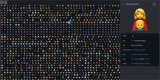
emoji-ui
Lookup emoji
-
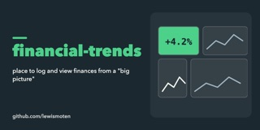
financial-trends
place to log and view finances from a "big picture"
-
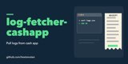
log-fetcher-cashapp
Pull logs from Cash App
-
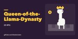
Queen-of-the-Llama-Dynasty
A tile-based, turn-based 2D RPG experiment with React, Redux and cryptocurrency.
-
schmuck-miser
Tool to track my finances and sometimes foolish decisions.
2019
-
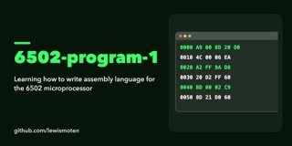
6502-program-1
Learning how to write assembly language for the 6502 microprocessor
-
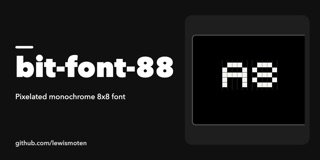
bit-font-88
A pixelated monochrome 8x8 font with a drawing page.
-
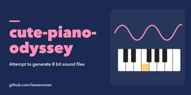
cute-piano-odyssey
Experiments reading and generating 8-bit WAV audio files.
-
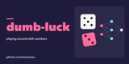
dumb-luck
Playing around with numbers: neural networks, tic-tac-toe and pick 3
-
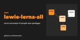
lewie-lerna-all
Lerna monorepo for trying out publishing several npm packages together
-
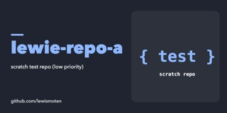
lewie-repo-a
Scratch repository with a tiny npm module.
-
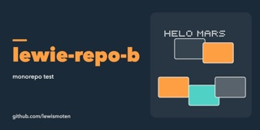
lewie-repo-b
monorepo test
-
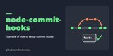
node-commit-hooks
Example of how to set up commit hooks (husky and commitlint)
-
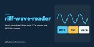
riff-wave-reader
Read 8-bit WAVE files with PCM data in the RIFF file format
2018
-
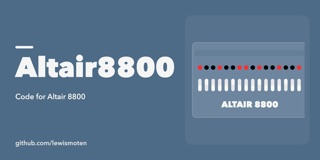
Altair8800
Code for the Altair 8800
-
ghost-ticker
Making a glowing ticker using UV LEDs and glow-in-the-dark masking tape
-
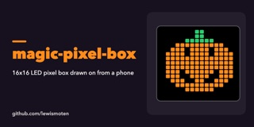
magic-pixel-box
Arduino sketches for a 16x16 RGB LED pixel box drawn on from a phone over Bluetooth LE
-
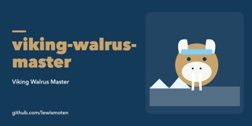
viking-walrus-master
Viking Walrus Master: a tile-mapped game in progress
2017
-
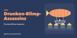
Drunken-Blimp-Assassins
A small HTML5 canvas game about a pirate ship with a balloon stopping drunken assassins.
-
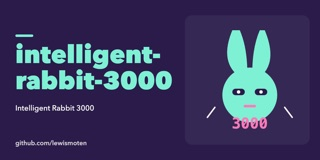
intelligent-rabbit-3000
Early Unity project (2017) with a rabbit sprite and one scene
-
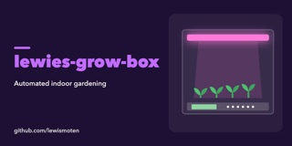
lewies-grow-box
Automated indoor gardening
-
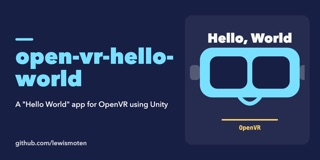
open-vr-hello-world
A "Hello World" app for OpenVR using Unity
-
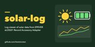
solar-log
Log viewer of solar data from an EPEVER eLOG01 Record Accessory Adapter
2016
-
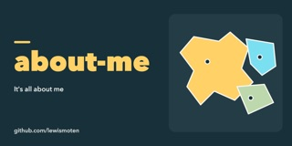
about-me
GeoJSON outlines of towns and neighborhoods.
-
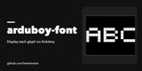
arduboy-font
Display each glyph on Arduboy
-
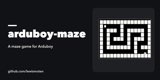
arduboy-maze
A maze game for the Arduboy handheld.
-
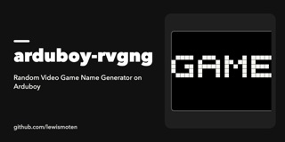
arduboy-rvgng
Random Video Game Name Generator on Arduboy
-
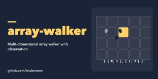
array-walker
Multi-dimensional array walker with observation
-
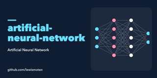
artificial-neural-network
Artificial neural network in JavaScript, built for learning
-
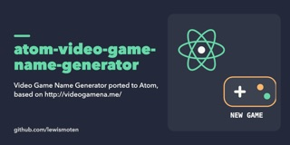
atom-video-game-name-generator
Video game name generator for Atom, ported from videogamena.me
-
book-smith
Create random lists of words and sentences from books
-
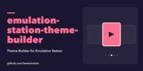
emulation-station-theme-builder
Unfinished browser tool for building EmulationStation themes.
-
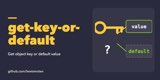
get-key-or-default
Get an object key or a default value
-
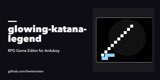
glowing-katana-legend
RPG game editor for Arduboy
-
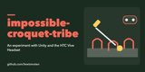
impossible-croquet-tribe
An experiment with Unity and the HTC Vive Headset
-
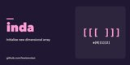
inda
Create a new multi-dimensional array with initialized values.
-
indexed-template
A processor for indexed template literals.
-
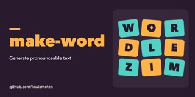
make-word
Generate pronounceable English-like text
-
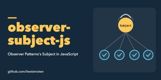
observer-subject-js
Observer pattern's Subject in JavaScript
-
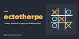
octothorpe
Creates an octothorpe with values provided
-
octothorpe-xo
A tic-tac-toe game engine for Node.js
-
screeps.com
Scripts for playing Screeps
-
sinister-chicken-syndicate
Node.js project template with continuous integration
-
softmax
The softmax function in JavaScript
-
tic-tac-toe-ai
A Tic-Tac-Toe AI in JavaScript that plays by ordered strategies.
2015
-
8-Bit-Sewer-Tale
Start of a JavaScript text-based adventure game.
-
Concentration-Game
Match playing cards of the same color and value (a Second Life game)
-
device-orientation
Browser demo of device orientation and motion data, with a compass heading.
-
drop-kicking-babies
Cute babies drop-kicking objects
-
Eliza-Chatbot-LSL
Second Life chatbot: a parody of a Rogerian therapist, in Linden Scripting Language.
-
Frisky-Bomberman-Live
A frisky bomber is trying to plant a bomb on you! A small HTML5 canvas game.
-
KeyValueStore-NoSQL
Key/value store NoSQL database using PHP and MySQL
-
mystery-robot-joe
Researching microcontrollers with robotics in mind
-
Password-Generator
Second Life gadget that generates random passwords and sends them by instant message.
-
Prim-Import-Export-Library
LSL scripts for exporting Second Life objects (prims) and rebuilding them
-
quiet-raccoon-training
Training Raccoons... Quietly
-
rc-sailboat
Radio controlled 3D printed sailboat
-
Tic-Tac-Toe-lsl
A game of Tic-Tac-Toe in Linden Scripting Language for Second Life
-
Unstoppable-Banjo-in-Busytown
Working with client/server architecture in JavaScript: WebSocket and WebRTC experiments
-
web-gl
Learning the basics of WebGL
-
web-rtc-cam
Display the end user's webcam stream on a web page
-
Wild-West-Puppy-Theater
A maze game in the console
2014
-
tic-tac-toe
Tic-tac-toe in JavaScript and HTML5, optimized for offline play on a mobile device
2013
-
BowlingKata
The bowling game kata in C#
-
CheerfulDrill
Extracts data from text and HTML content with regular expressions
-
TechDayLabs
Code from a 2013 tech day lab: a test-first bowling kata in C#.
2012
-
PhpProject1
An early PHP experiment: a login service with nonce-based session tokens
-
Second-Life-Projects
A collection of projects that I made in Second Life as Dedric Mauriac
2000
-
Lewies-Code-Library-PSC (scripts, 2000–2004)
All open source projects that I had published to Planet Source Code